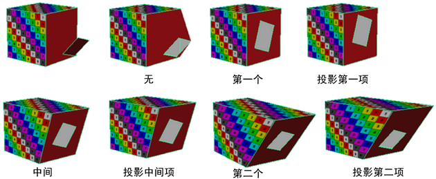

在“建模”(Modeling)菜单集中，选择“网格工具 > 生成洞”(Mesh Tools > Make Hole) >  可打开这些选项。有关如何使用该工具的详细信息，请参见在多边形面中生成洞。
可打开这些选项。有关如何使用该工具的详细信息，请参见在多边形面中生成洞。
- 合并模式(Merge mode)
- 确定如何创建洞。
使用“第一个”(First)、“中间”(Middle)和“第二个”(Second)合并模式，使图章面的中心与在其上生成洞的面的中心相匹配。“投影合并”(Project Merge)模式就在图章面所处的位置生成洞。这些模式不会使洞居中，但是使洞平面与平面面对齐。它们也不会像“第一个”(First)、“中间”(Middle)和“第二个”(Second)合并模式那样，旋转面来与中心匹配。
- 第一个(First)
- 选择的第二个面进行了变换，以使中心匹配。选择的第一个面不进行变换。
- 中间(Middle)
- 第一个面和第二个面都进行了变换，以使其中心匹配。
- 第二个(Second)
- 选择的第一个面进行了变换，以使中心匹配。选择的第二个面不进行变换。
- 投影第一项(Project First)
- 选择的第二个面投影到选择的第一个面上，而且中心不匹配。与“第一个”合并模式不同（旋转面以匹配中心），不旋转面。
- 投影中间项(Project Middle)
- 两个面都投影到位于它们之间的平面上；它们的中心不一定匹配。
- 投影第二项(Project Second)
- 选择的第一个面投影到选择的第二个面上，而且中心不匹配。
- 无(None)
- 图章面直接投影到您选择的面平面上。这是默认设置。
